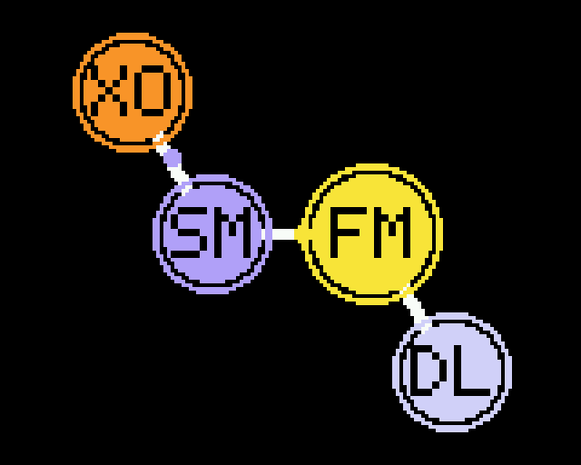
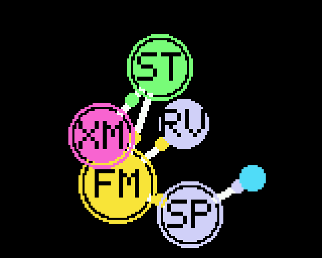
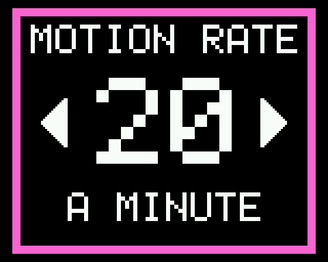

For the Sonicake Pocket Master
A firmware for the discovery of sound
For electroacoustic, acousmatic and experimental music. Molecular does not wait for instructions: it proposes sounds, and you answer them. The music comes out of that conversation.
A conversation, not a control panel
Most instruments are built so that every sound can be reached and repeated. Molecular is built the other way round. Each sound is a molecule: an FM generator bonded to up to five effect atoms, all drawn at random. You do not set its parameters one by one. You ask for another molecule, rewire this one, give its atoms new values, change how its LFOs move, and listen to what comes back. When something is worth keeping, you keep it in one of twelve patches.
It belongs to the tradition of the studio as a place of discovery: the Groupe de Recherches Musicales, IRCAM, Pierre Henry's sons inouïs, Bernard Parmegiani's De Natura Sonorum, Jean-Claude Risset's synthetic bells. Sounds there were found as much as made, by listening to what a process gave and choosing what to keep.
Turn MOTION on and the molecule keeps changing by itself: atoms drift, bonds break and form, atoms arrive and leave, values glide. You listen, steer and decide when to stop it.
Motion
Hold the right button and the molecule starts to move. It does two things at once, as real molecules do.
- Thermal motion
- Every atom drifts on a path that turns smoothly. Bonds stretch and pull like springs, and atoms that come too close push each other away. Each atom's place on the screen is its place in the stereo field, so the sound drifts as the picture does.
- Rearrangements
- At the motion rate you set, from 6 to 120 events a minute, the molecule changes. It is rewired, so the same atoms form new bonds, as in a chemical rearrangement. An atom is added and swells into the molecule, or an atom shrinks away and leaves it. Or an atom's values move somewhere new. The generator, the voice, is never touched.
Nothing jumps. A new bond draws its atoms together over a second or two, and the sound crossfades along it. An arriving atom comes in dry and turns wet. A leaving atom fades from the mix before it goes. New values glide over the whole time until the next event. The sound is a continuum, not a series of presets.



Features
- The generator
- Two engines and 66 families. Six-operator FM: Tonitor's bells, drones, choirs and spectres, harsh textures, held sounds such as HUM, SWARM, MODES and CORONA, struck metal (ANVIL, RIVET, GEARS, FORGE) on unstable clocks, and recipes from the FM literature (Truax's normal forms, Schottstaedt's piano, Chowning's tubular bell, formants, allure). And physical models: Karplus-Strong strings and tubes, banded-waveguide bowls, modal bars, bells and membranes (HARP, WIRE, SNARE, PIPE, SITAR, GONG, BOWL, BAR, BELL, SKIN), struck or held.
- Atoms
- 46 effects: Norilsk's 25 (filters, folders, resonators, tape, spring, glitch, granular clouds, Chebyshev harmonics, XOR, wavesets, a chaotic oscillator and more), a delay and a reverb, and 19 of Molecular's own from the electroacoustic studio and beyond: pitch spirals, LPC, envelope inversion, a Buchla low-pass gate, an endless comb, friction, a spectral delay, a reed, undertones, spectral contrast and blur, Doppler, the GSM codec, Xenakis' GENDY, spectral inversion and more.
- The molecule
- Up to five atoms in a tree: each atom takes its parent's sound, and the outermost atoms are heard, spread across the stereo field as they are across the screen. Half of what you hear is the generator itself, half the atoms.
- LFOs
- The generator's four macros and one value of each atom move on their own LFOs, drawn anew with a held left button.
- Motion
- The molecule moving and rearranging itself, at a rate saved with each patch.
- Patches
- Twelve slots, kept in the pedal's flash: the molecule exactly as it sounds, its motion rate included.
- Accessible
- Few words, very large type, high contrast, a colour for each family of effects.
The controls
| Control | Does |
|---|---|
| Encoder, turn | Volume |
| Encoder, press | A new molecule |
| Encoder, hold | The menu: SETTINGS, PATCHES, POWER |
| Left button | Rewire the molecule: the same atoms, new bonds |
| Left button, hold | New LFOs for the generator and every atom |
| Right button | New values for every atom |
| Right button, hold | MOTION on or off |
Everything else is in the manual.
Installing
Molecular installs from this website, in a desktop Chrome, Edge or Opera, over the pedal's own USB cable. Only the pedal's main program is replaced: the effects processor's firmware and Sonicake's presets stay as they are, and the original firmware can be put back at any time from the same page. Install Molecular.
Molecular is an unofficial firmware, not made, endorsed or supported by Sonicake. It comes with no warranty; you install it at your own risk.